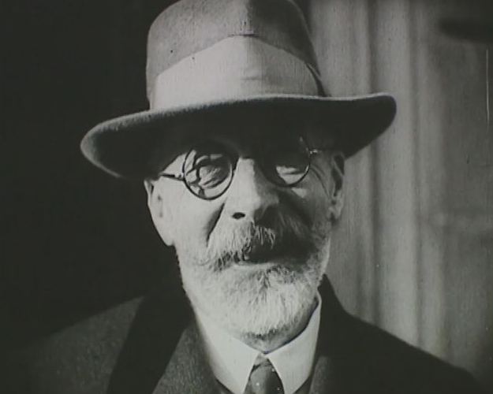
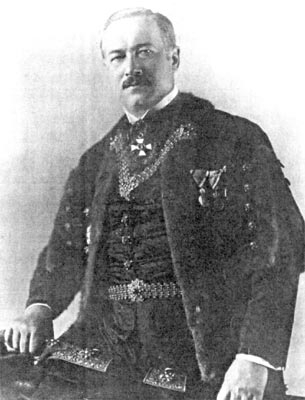
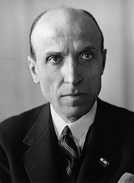

Az 1930-as évek magyar belpolitikája
Gróf Károlyi Gyula
Az 1930-as években Magyarország belpolitikai helyzete jelentősen átalakult. Bethlen lemondása után, az új miniszterelnök, gróf Károlyi Gyula, költségcsökkentő intézkedésekkel próbálta stabilizálni a helyzetet, de ezek az intézkedések csak tovább növelték az elégedetlenséget. Az 1931-es biatorbágyi merénylet – amikor Matuska Szilveszter felrobbantotta a bécsi gyorsot – ürügyet adott a kormánynak, hogy keményen fellépjen a kommunista mozgalmak ellen. A statárium bevezetésével két kommunista vezetőt, Sallai Imrét és Fürst Sándort kivégezték. Az ország belső feszültségei azonban nem enyhültek.

Gömbösi Gyula és Darányi Kálmán
1932-ben Gömbös Gyula került a miniszterelnöki székbe, aki Nemzeti Munkatervének pontjaival próbálta átfogó reformokat bevezetni. Bár politikai nézetei között keveredtek a szélsőséges és mérsékeltebb elképzelések, gyakorlati megvalósításuk kudarcba fulladt. Gömbös meggyengülve távozott, és halálos betegsége miatt nem váltották le hivatalosan. Gömbös utódja, Darányi Kálmán, eleinte igyekezett fellépni a szélsőjobboldallal szemben, de idővel a német sikerek hatására ő is engedményeket tett. A márciusi Front megjelenése és a Független Kisgazdapárt megerősödése új politikai irányvonalakat hozott. Ekkoriban kezdett előtérbe kerülni Szálasi Ferenc nyilaskeresztes mozgalma is, amely nyíltan hangoztatta faji alapon a zsidóság elleni intézkedések szükségességét.

Gömbösi Gyula

Darányi Kálmán
Imrédy Gyula

Az 1938-ban miniszterelnökké kinevezett Imrédy Béla megpróbálta csökkenteni a szélsőjobboldali befolyást, többek között a titkos szavazás bevezetésének tervével.
Bár kezdetben sikereket ért el, például az első bécsi döntés révén visszakapott területekkel, politikai pályafutása hamar véget ért, amikor kiderült,
hogy egyik felmenője zsidó származású. Ez végleg megingatta politikai helyzetét, és Horthy Miklós gróf újra Teleki Pált nevezte ki utódjául.